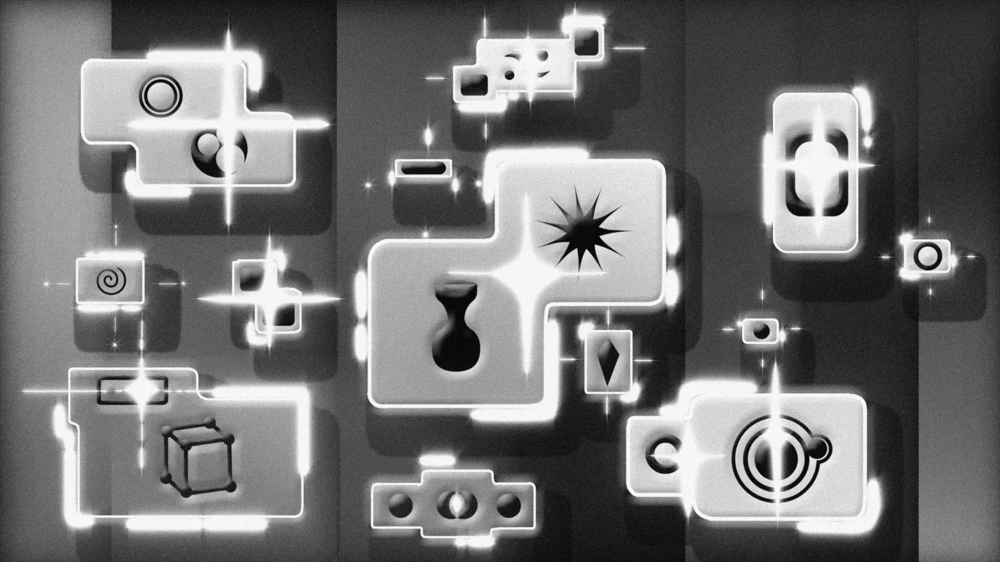
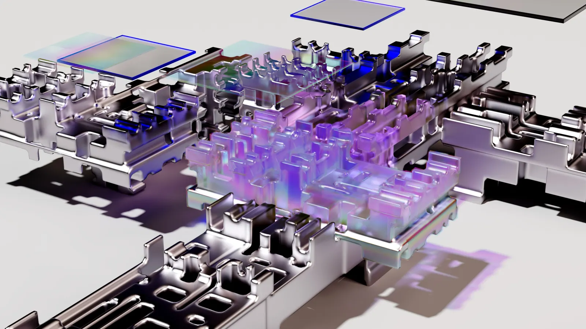
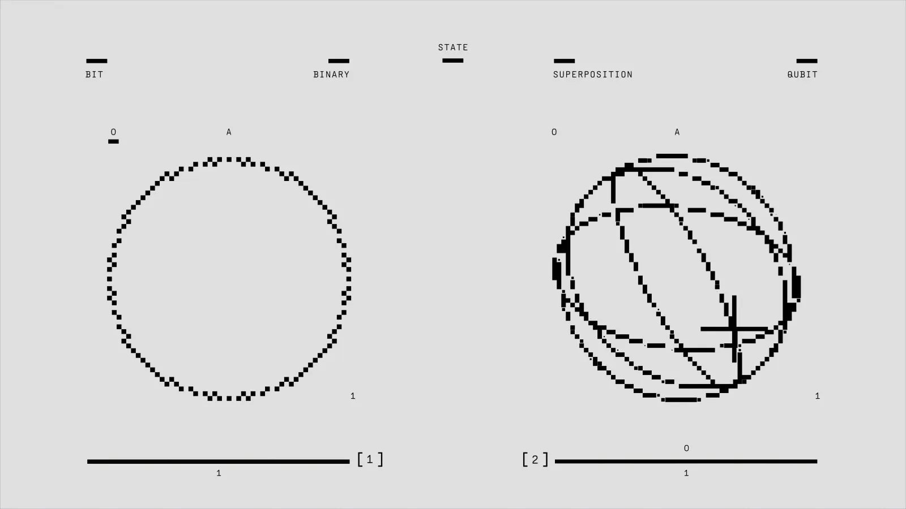

Gobernanza de IA · Decisiones reales
El sistema que piensa con las organizaciones — contexto, evidencia y trazabilidad en cada decisión.
SIMON THINKS · 2026Plantilla de presentación


Agenda
Lo que veremos hoy.
04 secciones · 20 min01El problema de decidir
02Los módulos
03Gobernanza en acción
04Resultados
01
Las organizaciones deciden a ciegas.
Miles de señales, ninguna trazabilidad. La decisión se toma — pero nadie puede explicarla después.
No automatizamos la decisión. La hacemos defendible.
— Principio de diseño
Cuatro módulos, un flujo.

THINK
Razonamiento y contexto.

CORE
Gobernanza y memoria.

CUSTOM
Reglas del cliente.
LIGHT
Entrega y resumen.
Cómo decide
Cada decisión, construida pieza por pieza.
El núcleo ensambla contexto, evidencia y política en una recomendación que se puede inspeccionar y revertir.

Flujo de decisión gobernada
De la evidencia a la decisión.
INPUT · 01
Contexto
INPUT · 02
Evidencia
CORE
Núcleo de gobernanza
Evalúa · traza · versiona
OUTPUT
Recomendación
confianza 87%ACCIÓN
Decisión
MEMORIA
Lección registrada que vuelve al contexto
Panel de gobernanza
Decisiones, medidas.
Decisiones por módulo
Aprobadas · 65%
En revisión · 24%
Bloqueadas · 11%
87%
confianza media

El modelo no basta
La IA propone. La gobernanza responde por qué.
Confianza media
87%
de las decisiones recomendadas se aprobaron sin revisión adicional, trazables a su evidencia.
184
decisiones / 30d
+9m
retorno de riesgo


Gobernanza en acción
Decisiones que la organización entiende y puede auditar.
Tendencia
La confianza crece con la memoria.
Q1 · 62%Q2 · 68%Q3 · 74%Q4 · 81%
Aprende con el tiempo
Cada decisión deja una lección.
La memoria del sistema convierte cada caso en mejor criterio para el siguiente.

simonthinks.ai
hola@simonthinks.ai